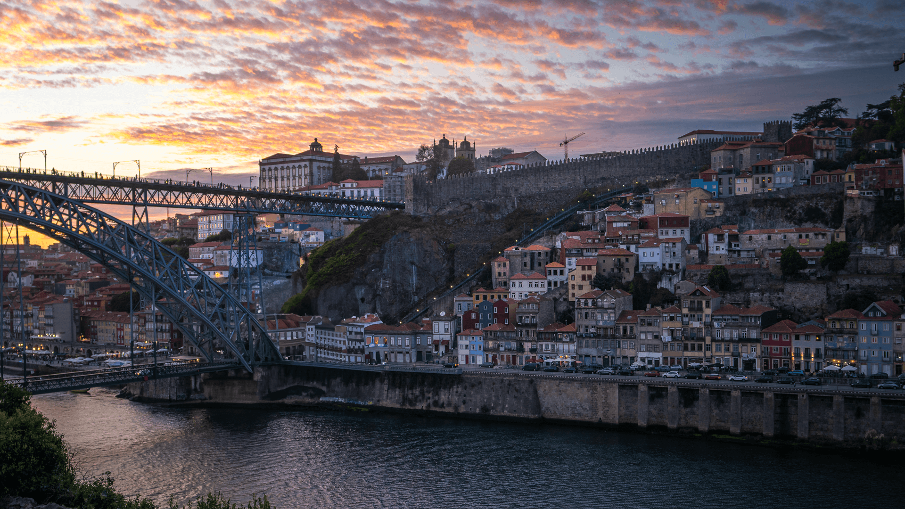
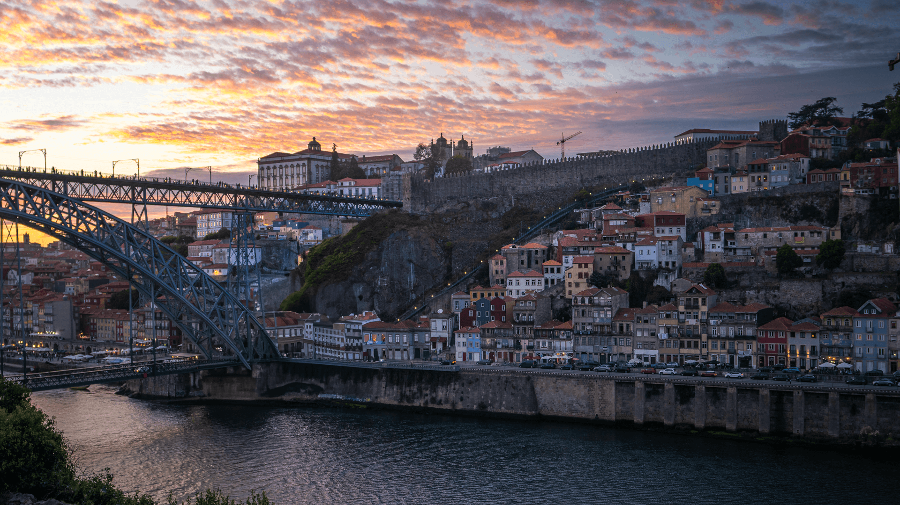

Why Choose This Guide?
-
✔ Uses Google Maps for easy navigation.
-
✔ 77 points with descriptions in English, Spanish, French, and Portuguese.
-
✔ Tailored for photographers with the best times and seasons to shoot.
-
✔ Includes example photos for inspiration at each location.
-
✔ Custom paths to remote spots created by the author.
-
✔ Lifetime access and free updates.
Photo Highlights
 


Example Highlights
See a sneak peek of the maps and descriptions included in the guide: